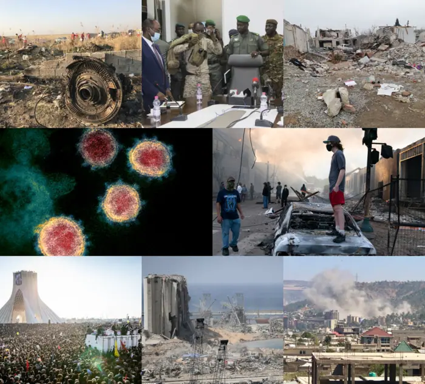

Health
DR Congo rolls out Ebola vaccine for health workers as death toll rises
<h2>DR Congo rolls out Ebola vaccine for health workers as death toll climbs</h2> <p>In the eastern provinces of North Kivu and Ituri, the Democratic Republic of the Congo is confronting a new Ebola outbreak that has already claimed more than 1,200 confirmed deaths. The escalating toll has spurred the Ministry of Health to launch a mass vaccination campaign aimed at protecting frontline workers and curbing further spread.</p> <h3>Historical backdrop</h3> <p>Ebola first emerged in the DRC in 1995, when a cluster of cases in the western province of Bandundu caused 18 deaths. Subsequent outbreaks in 2000 and 2007, both centered in North Kivu, added 1,400 deaths to the national tally, underscoring the country’s vulnerability to the virus. The 2018‑2020 epidemic, the largest in the world, produced 3,000 laboratory‑confirmed cases and 2,400 deaths across all provinces. It was largely contained through aggressive contact tracing, isolation, and the use of the rVSV‑ZEBOV vaccine [1]. The current crisis unfolds against a backdrop of ongoing conflict, which has repeatedly hampered containment efforts.</p> <h3>The vaccine: science and rollout</h3> <p>The rVSV‑ZEBOV vaccine is a single‑dose, live‑attenuated recombinant vesicular stomatitis virus that expresses the Ebola glycoprotein. Phase III trials conducted in the DRC in 2018–2019 demonstrated an efficacy of 97 % against Ebola virus disease when administered as a single intramuscular injection [2]. The vaccine confers protection within 10 days of administration, a rapid onset that is critical in outbreak settings [3]. Its safety profile is robust; field use during the 2018‑2020 epidemic reported only mild, transient adverse events such as fever, headache, and injection‑site pain, with no serious adverse events documented [4].</p> <p>In the current campaign, the Ministry of Health has secured 1.2 million doses from WHO, with Gavi and other partners providing additional procurement support. The first batch arrived in Goma on 12 April 2024, and the first health worker received the dose on 15 April. The target is to vaccinate 70 % of all health workers in high‑risk districts within six months, a goal that hinges on maintaining a reliable cold chain and securing the trust of the workforce.</p> <h3>Security and logistical challenges</h3> <p>Since the outbreak began in early 2024, armed groups—most notably the Allied Democratic Forces (ADF) and the Democratic Forces for the Liberation of Rwanda (FDLR)—have controlled large swaths of territory in North Kivu and Ituri. Their presence disrupts surveillance, contact tracing, and the delivery of medical supplies. Health facilities are often targeted or abandoned, forcing patients to travel long distances to reach care. The fragile infrastructure has also disrupted supply chains, making it difficult to maintain the cold‑chain requirements for the vaccine and to transport personnel to remote vaccination sites [5].</p> <p>To mitigate these risks, the Ministry of Health has partnered with MONUSCO peacekeepers to secure vaccination sites and transport routes. In some districts, health workers have reported being threatened by armed men who suspect them of being collaborators with the government. The presence of MONUSCO has, in several cases, allowed teams to move safely and to establish temporary vaccination posts in previously inaccessible villages.</p> <h3>Community and worker attitudes</h3> <p>Vaccine hesitancy remains a significant barrier. A WHO field survey conducted in June 2024 found that 68 % of health workers in high‑risk facilities in Goma had accepted the vaccine, a figure that varies across districts and is influenced by prior experiences with shortages of basic medical supplies [6].</p> <p>“When people hear that the vaccine is a new technology, they think it might be dangerous,” said Dr. Amara, a nurse in Goma who has treated several Ebola patients. “We need to explain that it has been tested and proven safe.” Her comments reflect a growing need for transparent communication and community engagement.</p> <p>In Ituri, community leader Mwana Soko expressed concerns about the vaccine’s safety: “We fear the vaccine is a weapon. Some people say it’s a way to control us.” He added that trust in the health system is low, especially where health facilities have been damaged by militia attacks. “We need to see that the people who deliver the vaccine are not part of the conflict,” he said [7].</p> <p>Health worker Jean‑Pierre, who works at a mobile clinic in the Ituri province, echoed these concerns. “I want to protect my patients, but I also worry about the vaccine’s side effects,” he said. “If the government is not transparent, we will not trust it.” His sentiments underscore the importance of building trust through community engagement and transparent communication.</p> <h3>Funding and international support</h3> <p>The DRC government has pledged significant resources to the vaccine campaign, citing a commitment to protect its workforce and to contain the outbreak. In March 2024, the Global Fund approved a $20 million grant for the Ebola response in the DRC, covering vaccine procurement, training, and community outreach [8]. WHO has pledged technical assistance, while Médecins Sans Frontières (MSF) continues to supply logistical support, including solar‑powered refrigerators and mobile cold‑chain units.</p> <p>Despite these contributions, the country’s budgetary constraints and competing humanitarian priorities—such as food insecurity, displacement, and ongoing conflict—create tension between political will and resource scarcity. Global attention has intensified pressure on the DRC to act swiftly, but local realities—logistical nightmares, security risks, and mistrust—continue to challenge the rollout [9].</p> <h3>Hesitancy versus necessity</h3> <p>Health workers’ reluctance to vaccinate is rooted in legitimate concerns about safety, but it also threatens the efficacy of the overall response. Without adequate protection for frontline staff, nosocomial transmission can accelerate, undermining containment efforts. The campaign’s success hinges on addressing hesitancy through transparent communication, community engagement, and evidence‑based reassurance about the vaccine’s safety profile.</p> <h3>Political will versus resource scarcity</h3> <p>The DRC’s commitment to vaccinate its health workforce demonstrates political resolve, yet the limited financial and logistical resources constrain the pace and reach of the campaign. International donors have pledged support, but the coordination of aid, the procurement of vaccine doses, and the establishment of cold‑chain infrastructure remain bottlenecks. The tension between ambition and feasibility is a recurring theme in outbreak responses in low‑resource settings.</p> <h3>Global attention versus local realities</h3> <p>While the international community’s focus on the DRC’s Ebola crisis brings much‑needed resources and expertise, it also risks oversimplifying the complex local dynamics. Global narratives often emphasize the urgency of containment, yet they may overlook the nuanced interplay of conflict, cultural beliefs, and logistical constraints that shape the day‑to‑day reality of health workers and communities on the ground.</p>

Sources & further reading
- Unknown Six biology breakthroughs that should have won a Nobel Prize—but didn’t
- BBC Ebola vaccine trial to start in DR Congo as warning issued over speed of infections
- Al Jazeera DR Congo rolls out Ebola vaccine for health workers as death toll rises
- Science | AAAS ‘Mismatched’ vaccine being rolled out against Ebola outbreak - Science | AAAS
- UN News DRC Ebola outbreak: hundreds of suspected cases, no vaccine
- The Globe and Mail Congo rolls out Canadian-developed vaccine to fight Ebola outbreak
- Euronews.com Video. Congo rolls out Ebola vaccine as world's fastest outbreak grows
- CP24 Africa CDC says will use Zaire Ebola vaccine in current outbreak
- CIDRAP DR Congo Ebola cases grow, deaths top 4,000 as officials struggle to ascertain numbers, trends
- DW.com DRC Ebola outbreak 'growing exponentially,' UN says
- PBS Congo faces health worker shortage as Ebola remains out of control, WHO says
- Los Angeles Times Congo begins Ebola vaccinations for health workers in the epicenter of the outbreak
- China Daily DRC launches Ebola vaccine trial for frontline workers
- MSF MSF launches Ebola disease vaccination study among DRC frontline workers
- Unknown Canada commits $1.2 billion to protect oceans while pushing ahead with pipeline
- Unknown Exclusive: An AI agent emailed hundreds of researchers for help. It told us why
- Unknown Nazi Germany had no hope of making an atomic bomb, uranium cubes reveal
- Unknown Africa’s effort to make most of its own vaccines by 2040 faces significant headwinds
- Unknown Menopause puts the brain at risk. Researchers are starting to learn why
- Unknown AI helps decipher what elephant herds are ‘saying’
- Unknown Oil wells could become mines for critical minerals
- Unknown Five physics breakthroughs that should have won a Nobel Prize—but didn’t
- Unknown Method to ‘watermark’ AI-designed proteins could deter bioweapons, protect scientific credit
- Unknown Location, location, location: how to edit genes only in the cells you want
- Unknown ‘Learning about physics changed my life’: author Hernan Diaz on his new novel Ply